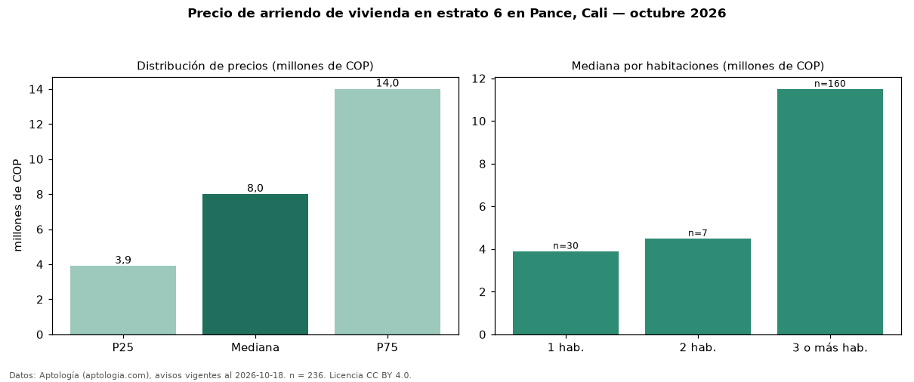

Precio de arriendo de vivienda en estrato 6 en Pance, Cali — octubre 2026
COP 8,00 millones al mes es el canon mediano de vivienda en estrato 6 en arriendo en Pance, Cali (n = 236 avisos). Por metro cuadrado, la mediana es COP 42.618/m² al mes (n = 224 avisos con área). La mitad central de los avisos va de COP 3,90 millones a COP 14 millones (razón 3,6), una dispersión alta. Incluye todos los tipos de vivienda de estrato 6 del barrio; la mediana de apartamentos del barrio, sin filtrar por estrato, es COP 5,30 millones. El área mediana anunciada es 212 m². El segmento con más oferta es el de 3 o más habitaciones (160 avisos, mediana COP 11,50 millones); pasar de 1 habitación a 3 o más habitaciones cambia la mediana +195 %. La administración mediana declarada es COP 1,21 millones al mes (n = 44), aparte del canon. Datos: Aptología (aptologia.com), CC BY 4.0 — https://www.aptologia.com/arriendo/cali/pance. Archivos: PDF, CSV con las cifras y gráfica PNG.

| Avisos únicos | 236 |
|---|---|
| Percentil 25 | COP 3.900.000 |
| Mediana | COP 8.000.000 |
| Percentil 75 | COP 14.000.000 |
| Mediana por m² | COP 42.617 |
Fuente: avisos vigentes de portales inmobiliarios recopilados por Aptología, deduplicados (mínimo 30 avisos únicos por celda). Precios pedidos, no cerrados. Fecha: 2026-10-18.